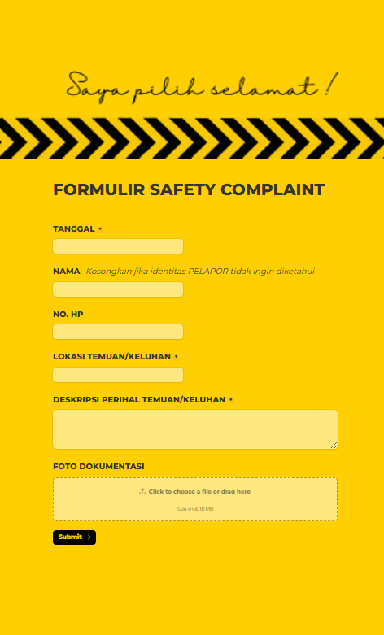
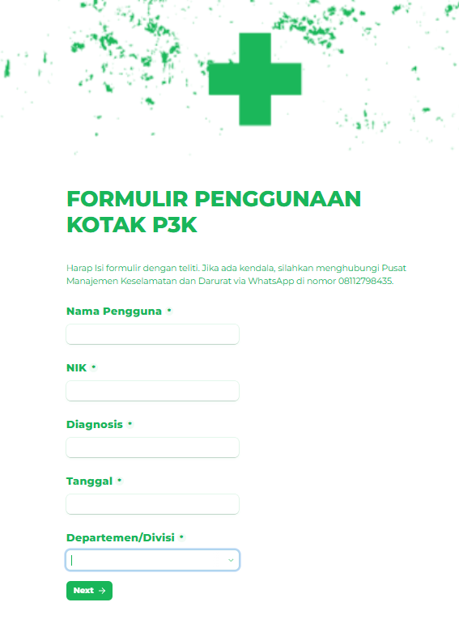
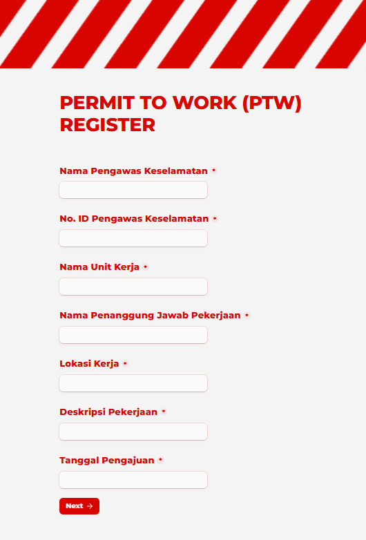

Safety Complain

| Software Engineer | Web Developer | Occupational Health and Safety Expert | Occupational Health and Safety Assistant Engineer | Auditor SMK3 |
Coming from a background in leading teams and keeping workplaces safe, I now bring that same discipline into Software Engineering. My goal is to build dependable and scalable solutions, guided by a detail‑oriented mindset to tackle complex challenges across industries.
I'm Nasaruddin. With experience across diverse industries in Indonesia, I’ve developed a commitment to building software solutions that are reliable and high‑integrity. My journey — from strategic leadership as an Acting Branch Manager to the technical rigor of an SMK3 Auditor — has shaped a safety‑first mindset that guides my work. I focus on scalable systems, thoughtful architecture, and workflow optimization, often integrating technology within occupational health and safety (OHS) frameworks. Driven by the challenge of turning manual processes into seamless digital solutions, I bring a blend of technical precision and operational insight to every project, confident that a foundation built on compliance and excellence is valuable in any forward‑thinking organization.



linkedIn.com/in/nasaruddin-st-86a593258